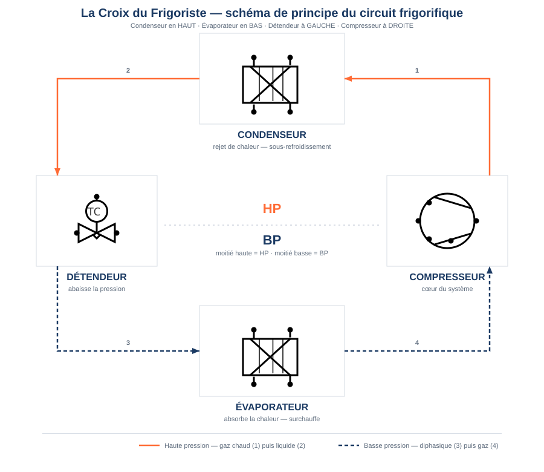

LPP
JACQUES RAYNAUD

CAP Installateur en Froid et Conditionnement d'Air — 2e année
Année scolaire 2026-2027 · Période P7
Séquence S14
Charger le fluide, mettre en service,
tracer (CERFA)
Le chantier de mise en service — phase A5

La Croix devient une machine vivante : sous pression, sous contrôle, tracée.
C4.2 Manipuler le fluide
C4.5 Mesurer, comparer
C4.6 Régler les consignes
C4.7 Raccorder charge/mesure
C1.1 Compléter, transmettre
Semaines 15 à 17 · du 02 février au 06 mars 2027
2 modules d'atelier de 4 h (A5-a, A5-b) · 1 h de théorie (T1 — le CERFA) ·
fil de l'eau F3 (carnet de bord) et F4 (feuille MES + CERFA) ·
évaluation sommative ≥ 1 h (semaine 17)
Phase chantier A5 — mise en service · suite de S13 (récupération) et de S12 (câblage, tirage au vide)
Cadre : référentiel CAP IFCA (activités, tâches, savoirs, compétences) ·
contribution certificative : EP2 réalisation / mise en service (coef. 5, P7-P8) et
EP3 mise en service & maintenance (coef. 4, P8)
❄ inerWeb Édu — par F. Henninot · LPP Jacques Raynaud — Campus EQUATIO
créé le 09/07/2026 · © F. Henninot 2026 — diffusion pédagogique autorisée, mention de l'origine requise
LPP
JACQUES RAYNAUD
Séquence S14 — plan de séquence
CAP IFCA 2A · P7 · semaines 15-17
Plan de séquence Invariant
Un découpage modulaire, pas une « séance de 8 h »
S13 a posé la récupération du fluide (C4.2 en confortement) et introduit les feuilles de mise en
service. S14 fait monter la compétence d'un cran : elle porte sur la charge, la
mise en service et la traçabilité CERFA. Chaque module est indépendant, ≤ 4 h, calé
sur la carte de progression — le câblage (S12) et l'étanchéité/vide (S12) ne sont pas repris ici.
Carte des semaines 15-17
| Sem. | Chantier FROID / MES | Techno | Co-interventions | Compétences | Tâches · savoirs |
|---|
15
02-06/02 | A5-a — Chargement gaz + première mise en service | CERFA (introduction) | Maths : puissance frigo (abaque) · Français : remplir le CERFA / F4 | C4.2 · C4.4 (carte hebdo) | T2 · T13 · T15
S0.1 · S7.1 |
16
23-27/02 | A5-b — Chargement gaz + réglages SC/SR | Le CERFA | Maths : puissance frigo (volume) · Français : notice CERFA · 🎬 MES | C4.2 · C4.5 | T2 · T13 · T15
S0.1 · S7.1 |
17
02-06/03 | ÉVALUATION SOMMATIVE S13-S14 (≥ 1 h) | Obligations réglementaires | Maths : puissance frigo · Français : documents réglementaires | C4.2 · C4.5 · C4.7 | T2 · T13 · T15
S0.1 · S7.1 |
Note référentiel : la carte de progression annuelle indique C4.4 en semaine 15 ; le
tableau des modules ci-dessous (source de détail) évalue en réalité C4.2 et C4.7 sur A5-a — écart signalé,
à confirmer par Franck, non corrigé arbitrairement. S7.1 = rattaché au bloc S7 Anglais technique,
libellé précis à confirmer (règle charte : code absent au référentiel → « à confirmer »).
La formule de chaque module — tâche + savoir + savoir-être → compétence Invariant
Une compétence n'est jamais évaluée « en l'air » : elle l'est
au travers d'une tâche professionnelle, en mobilisant un savoir, dans une posture (le savoir-être).
Règle de charte : jamais plus de 4 compétences évaluées par module.
| Module | Type | Durée | Contenu et formule (tâche · savoir · savoir-être) | Compétences (statut activité) |
|---|
| A5-a | Atelier | 4 h | Chargement du fluide + première mise en service : raccord manifold sur circuit tiré au vide validé, introduction de la charge (liquide au condenseur / vapeur), démarrage, premiers relevés HP/BP/T.
Tâches T2 · T13 — Savoirs prérequis S5.1 · S6.1 · S6.2, travaillés S5.2 · S0.1 — Savoir-être : geste à risque démontré, sécurité de la charge sans rappel. | C4.2 Confortement → Évaluation
C4.7 Évaluation |
| A5-b | Atelier | 4 h | Contrôle de la charge par SC/SR + réglages en fonctionnement : lecture HP/BP, calcul de la surchauffe et du sous-refroidissement, décision d'ajuster (compléter/retirer), réglage pressostat/détendeur.
Tâches T13 · T14 — Savoirs prérequis S5.2 · S5.1, travaillés S5.6 · S0.1 — Savoir-être : rigueur de la mesure, décision argumentée avant d'agir. | C4.5 Évaluation
C4.6 Confortement
C4.2 Confortement |
| T1 | Théorie | 1 h | Le CERFA et la traçabilité des fluides : fiche d'intervention FI-BSD, obligations F-Gaz, GWP/tCO₂e, attestation d'aptitude, registre.
Tâches T2 · T15 — Savoirs S0.1 · S1.2 — Savoir-être : rigueur administrative, honnêteté de la déclaration. | S0.1 · S1.2 Découverte → Confortement
(pas de compétence dédiée au référentiel pour ce module — ancrage savoir) |
| F3 | Fil de l'eau | 2 h (continu) | Carnet de bord — rituel tenu à chaque séance.
Tâche T1 — Savoir S3.1 — Savoir-être : rigueur et autonomie du suivi. | C1.3 · C2.1 Confortement |
| F4 | Fil de l'eau | 2 h | Feuille de relevé de mise en service + remplissage du CERFA — support écrit vedette de S14.
Tâches T2 · T15 — Savoirs S1.2 · S0.1 — Savoir-être : honnêteté de la mesure, rigueur administrative. | C1.1 Confortement → Évaluation
C4.5 Confortement |
| Éval | Sommative | 1 h | S13-S14 : récupération · charge · mise en service · CERFA. Poste individuel, remontée École Directe, semaine 17.
Tâches T2 · T13 · T15 — Savoirs S0.1 · S5.2 · S1.2 — Savoir-être : rigueur d'examen, sécurité sans rappel. | C4.2 · C4.5 · C4.7 Évaluation |
≤ 4 compétences évaluées par module ✓.
Bloom CAP 1→3 (citer, nommer, montrer, réaliser, appliquer, lire un relevé, remplir un document) —
jamais « analyser les écarts et optimiser » (hors calibre CAP).
Découverte première rencontre, aucun poids ·
Confortement renforcement, poids réduit ·
Évaluation positionnement officiel remonté, plein poids.
❄ inerWeb Édu — par F. Henninot · LPP Jacques Raynaud — Campus EQUATIO
créé le 09/07/2026 · © F. Henninot 2026 — diffusion pédagogique autorisée, mention de l'origine requise
LPP
JACQUES RAYNAUD
Séquence S14 — spiralaire, sécurité, évaluation
CAP IFCA 2A · P7 · semaines 15-17
Progression spiralaire Invariant
Niveau visé en sortie de période P7
Échelle I Initiation · C Consolidation · M Maîtrise · V Validé —
niveau visé dans la progression annuelle (à ne pas confondre avec l'échelle 0-4, qui est le
positionnement constaté un jour donné).
| Code | Compétence | Niveau visé P7 | Où, dans S14 |
|---|
| C4.2 | Manipuler le fluide frigorigène et les huiles | Maîtrise | Confortement A5-a / A5-b · évaluation A5-a et Éval sommative |
| C4.5 | Mesurer, comparer des grandeurs | Validé | Évaluation A5-b, F4, Éval sommative |
| C4.6 | Paramétrer ou régler les valeurs de consigne sur organe de régulation ou de sécurité | Validé | Confortement A5-b |
| C4.7 | Raccorder les équipements de charge, de mesure et de contrôle | Validé | Évaluation A5-a, Éval sommative |
| C4.1 | Tirer au vide (rappel, acquis S12) | Validé | Prérequis mobilisé en A5-a, non retravaillé activement |
⚠ Fil rouge sécurité de la période P7
Thématiques P7 : charge et récupération des fluides ; risque électrique,
consignation, vérification d'absence de tension (VAT) ; préparation à l'habilitation B1V ;
traçabilité CERFA/BSD.
- EPI : gants de manipulation du fluide (risque de gelure/projection), lunettes, chaussures de
sécurité ; EPI électriques pour les mesures sous tension.
- Gestes INTERDITS (rappelés sur chaque document) : jamais de charge sans tirage au vide
validé ; jamais de rejet de fluide à l'atmosphère (récupération obligatoire — F-Gaz) ;
jamais de bouteille de fluide chauffée à la flamme pour accélérer le transfert ;
VAT obligatoire avant toute intervention électrique (consignation NFC 18-510) ;
jamais de shunt d'un organe de sécurité.
🚨 En cas d'incident : couper — arrêt d'urgence —, alerter, ne jamais déplacer un
élève électrisé avant coupure confirmée. Arrêt d'urgence et trousse de secours localisés au rituel
d'entrée, rappelés à chaque module.
Évaluation sommative S13-S14 (semaine 17, ≥ 1 h)
Positionnement individuel par compétence, remonté sur École Directe :
récupération (rappel S13), charge, mise en service, CERFA. Compétences évaluées :
C4.2 · C4.5 · C4.7. Poste individuel, support : la machine du binôme, conditions réelles de
chantier, document CERFA à compléter en fin de passage.
❄ inerWeb Édu — par F. Henninot · LPP Jacques Raynaud — Campus EQUATIO
créé le 09/07/2026 · © F. Henninot 2026 — diffusion pédagogique autorisée, mention de l'origine requise
LPP
JACQUES RAYNAUD
Séquence S14 — méthodes et rangement des modules
CAP IFCA 2A · P7 · semaines 15-17
Méthodes pédagogiques Variable
Des méthodes différentes à chaque module
Rappel S11 : démonstration · plan de travail à jalons · situation-problème.
S12 : TP câblage · signature en 5 étapes · situation-problème étanchéité. S14 varie encore :
| Module | Méthode |
|---|
| A5-a | Démonstration guidée + postes tournants. La charge est un geste à risque : elle se
démontre, elle ne se découvre pas (limite assumée de la pédagogie de la découverte, charte §1). |
| A5-b | Étude de cas / diagnostic guidé. Interpréter un couple HP/BP et une valeur de SC/SR, puis
décider : manque de charge ? excès ? présence d'incondensables ? |
| T1 | Classe inversée + jeu de rôle « contrôle réglementaire ». L'élève remplit une FI-BSD puis
endosse le rôle du contrôleur pour vérifier celle d'un pair. |
| F4 | Renseignement de documents réels. Feuille de mise en service et CERFA complétés au fil des
relevés effectués en A5-a et A5-b — pas d'exercice hors-sol. |
| F3 | Rituel continu tenu à chaque séance (pas de méthode dédiée : c'est le fil qui relie les modules). |
| Éval | Poste individuel tournant, observation directe, posture d'évaluation (l'élève quitte son binôme). |
Rangement de la production Invariant
Où trouver le plan de séance de chaque module
Les plans de séance, documents élève et documents professeur ne sont pas recopiés
ici : ils vivent chacun dans leur sous-dossier, à la racine du dossier de séquence S14 (convention
usine FrigorX). Séquence complète (cf. _ETAT.md) — chemins ci-dessous donnés
à titre de rangement.
| Module | Sous-dossier | Contenu attendu |
|---|
| A5-a | Module A5-a - Chargement et première mise en service\ | Plan de séance · Document élève (TP) · Document professeur (corrigé) |
| A5-b | Module A5-b - Contrôle de la charge (SC-SR) et réglages\ | Plan de séance · Document élève (TP) · Document professeur (corrigé) |
| T1 | Module T1 - Le CERFA et la traçabilité\ | Document élève · Document professeur |
| F3 | Module F3 - Carnet de bord\ | Document élève · Document professeur |
| F4 | Module F4 - Feuille MES et CERFA\ | Document élève · Document professeur |
| Éval | Évaluation sommative S13-S14\ | Document élève (sujet) · Document professeur (corrigé + grille 0-4) · Plan de passation |
❄ inerWeb Édu — par F. Henninot · LPP Jacques Raynaud — Campus EQUATIO
créé le 09/07/2026 · © F. Henninot 2026 — diffusion pédagogique autorisée, mention de l'origine requise
LPP
JACQUES RAYNAUD
Séquence S14 — crédits et droits d'usage
CAP IFCA 2A · P7 · semaines 15-17
Crédits et droits d'usage
Projet inerWeb — © 2026 Franck Henninot.
Ce document est produit dans le cadre de l'enseignement du CAP Installateur
en Froid et Conditionnement d'Air (IFCA), LPP Jacques Raynaud — Campus EQUATIO.
Usage pédagogique non commercial : reproduction et adaptation
autorisées pour un usage d'enseignement, à condition de mentionner l'origine
(F. Henninot — inerWeb Édu) ; toute exploitation commerciale est interdite.
Licence équivalente à CC BY-NC 4.0 · inerweb.fr
Sources autoritaires de ce dossier : progression annuelle 2A CAP IFCA
(§5 tableau spiralaire, §6 évaluations sommatives) · référentiel officiel CAP IFCA (codes et libellés
T/S/C) · bibliothèque de la progression, rubrique S13-S14 (P7). Documents professionnels réels repris
dans les modules (CERFA FI-BSD, feuille de relevé de mise en service) cités « D'après : … » sur chaque
document concerné.
❄ inerWeb Édu — par F. Henninot · LPP Jacques Raynaud — Campus EQUATIO
créé le 09/07/2026 · © F. Henninot 2026 — diffusion pédagogique autorisée, mention de l'origine requise